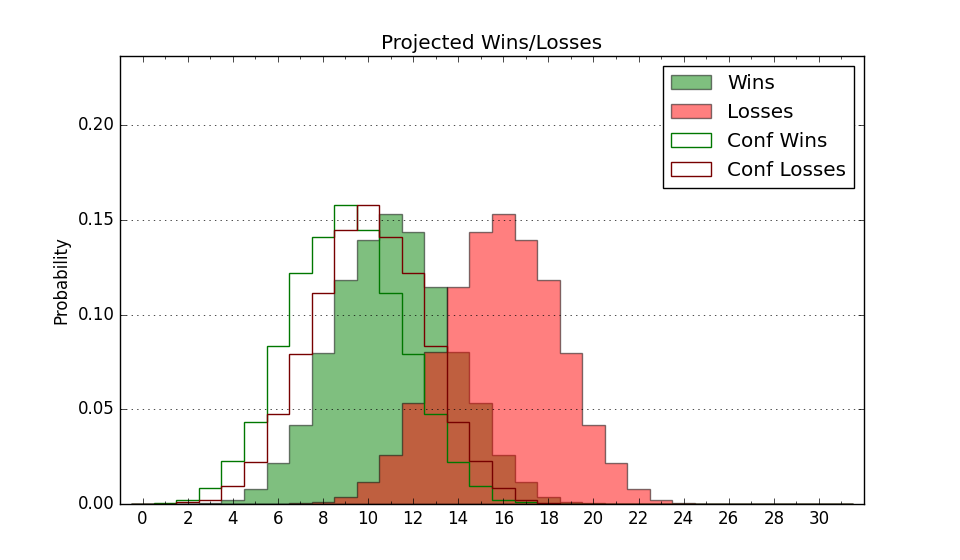

| Home | Game Probabilities | Conferences | Preseason Predictions | Odds Charts | NCAA Tournament |
| City: | Norfolk, Virginia | |
| Conference: | Sun Belt (1st)
| |
| Record: | 0-0 (Conf) 2-5 (Overall) | |
| Ratings: | Comp.: -5.5 (232nd) Net: -8.2 (249th) Off: 100.5 (218th) Def: 108.7 (279th) SoR: 0.0 (238th) |
| Remaining | ||||||
|---|---|---|---|---|---|---|
| Date | Opponent | Win Prob | Pred. | |||
| 12/9 | James Madison (77) | 27.7% | L 73-80 | |||
| 12/21 | (N) TCU (37) | 9.7% | L 65-81 | |||
| 12/30 | South Alabama (229) | 64.2% | W 71-67 | |||
| 1/4 | @ Troy (249) | 37.8% | L 70-73 | |||
| 1/6 | @ Arkansas St. (239) | 35.7% | L 69-73 | |||
| 1/11 | @ Georgia St. (206) | 30.9% | L 67-73 | |||
| 1/13 | @ Coastal Carolina (314) | 55.1% | W 73-72 | |||
| 1/18 | Marshall (227) | 63.5% | W 76-72 | |||
| 1/20 | Louisiana Monroe (301) | 78.5% | W 72-63 | |||
| 1/24 | James Madison (77) | 27.7% | L 73-80 | |||
| 1/27 | Georgia Southern (352) | 88.8% | W 79-65 | |||
| 2/1 | @ Marshall (227) | 33.8% | L 72-77 | |||
| 2/3 | @ James Madison (77) | 10.1% | L 68-84 | |||
| 2/7 | @ Southern Miss (241) | 35.8% | L 69-73 | |||
| 2/15 | Louisiana Lafayette (193) | 58.6% | W 72-70 | |||
| 2/17 | Georgia St. (206) | 60.4% | W 72-69 | |||
| 2/22 | Appalachian St. (88) | 31.1% | L 65-71 | |||
| 2/24 | Coastal Carolina (314) | 80.7% | W 77-68 | |||
| 2/28 | @ Appalachian St. (88) | 11.7% | L 61-75 | |||
| 3/1 | @ Georgia Southern (352) | 70.0% | W 75-69 | |||
| Previous | Game Score | |||||
| Date | Opponent | Win Prob | Result | Off | Def | Net |
| 11/11 | @Ball St. (264) | 42.5% | L 68-73 | -1.8 | 1.1 | -0.7 |
| 11/13 | @Arkansas (44) | 6.1% | L 77-86 | 19.9 | -10.9 | 9.0 |
| 11/22 | Princeton (45) | 18.2% | L 56-76 | -7.9 | -7.1 | -15.0 |
| 11/26 | Drexel (122) | 41.0% | W 68-61 | -3.7 | 10.7 | 7.0 |
| 11/29 | Radford (205) | 60.4% | W 69-68 | 3.8 | 1.9 | 5.7 |
| 12/2 | @Northeastern (219) | 32.9% | L 68-81 | -12.6 | -1.7 | -14.2 |
| 12/6 | @William & Mary (318) | 56.9% | L 79-84 | 7.3 | -23.5 | -16.2 |
| Stats & Trends | |||||
|---|---|---|---|---|---|
| Current | Day | Week | Month | Season | |
| Composite | -5.5 | -0.1 | -3.5 | -3.6 | -3.6 |
| Comp Rank | 232 | -- | -46 | -50 | -51 |
| Net Efficiency | -8.2 | -0.1 | -5.9 | +990.8 | -- |
| Net Rank | 249 | -- | -52 | +8 | -- |
| Off Efficiency | 100.5 | -0.0 | -2.8 | +100.5 | -- |
| Off Rank | 218 | -1 | -45 | +39 | -- |
| Def Efficiency | 108.7 | -0.1 | -3.1 | +890.3 | -- |
| Def Rank | 279 | -- | -51 | -22 | -- |
| SoS Rank | 144 | -- | -46 | +113 | -- |
| Exp. Wins | 11.1 | -0.1 | -2.4 | -2.7 | -2.8 |
| Exp. Conf Wins | 9.0 | -0.1 | -1.2 | -1.4 | -1.4 |
| Conf Champ Prob | 1.4 | -0.2 | -3.9 | -7.5 | -8.2 |

| Advanced Stats | ||
|---|---|---|
| Stat | Value | Rank |
| Off Eff FG % | 0.495 | 197 |
| Off Ast Ratio | 0.128 | 238 |
| Off ORB% | 0.265 | 218 |
| Off TO Rate | 0.148 | 166 |
| Off FT Ratio | 0.226 | 352 |
| Def Eff FG % | 0.515 | 233 |
| Def Ast Ratio | 0.147 | 238 |
| Def ORB% | 0.272 | 168 |
| Def TO Rate | 0.149 | 192 |
| Def FT Ratio | 0.506 | 356 |